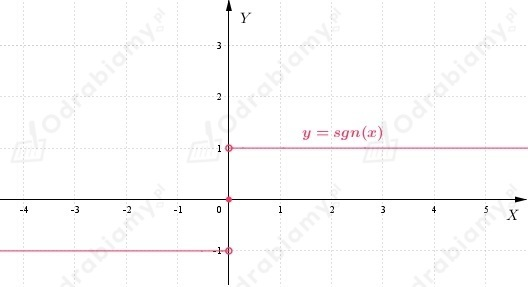

| Liczba g jest granicą funkcji f w punkcie x0, jeśli dla każdego ciągu (xn) zbieżnego do x0, o wyrazach należących do dziedziny funkcji f i różnych od x0, ciąg (f(xn)) jest zbieżny do g. |
Z treści zadania wiemy, że
Rozpatrujemy ciągi:
zbieżne do 0, czyli:
Zauważamy, że
Wnioskujemy, że funkcja f nie ma granicy w punkcie x0=0, ponieważ
| Liczba g jest granicą funkcji f w punkcie x0, jeśli dla każdego ciągu (xn) zbieżnego do x0, o wyrazach należących do dziedziny funkcji f i różnych od x0, ciąg (f(xn)) jest zbieżny do g. |
Z treści zadania wiemy, że
Szkicujemy wykres powyższej funkcji:

Rozpatrujemy ciągi:
zbieżne do 0, czyli:
Zauważamy, że
Wnioskujemy, że funkcja f nie ma granicy w punkcie x0=0, ponieważ
co należało wykazać.
a)
Z wykresu funkcji f możemy odczytać, że nie ma ona granicy w punkcie x0=-1.
Gdy x "zbliża się" do -1 z prawej strony, to wartość funkcji "zbliża się" do 0.
Natomiast, gdy x "zbliża się" do -1 z lewej strony, to wartość funkcji "zbliża się" do -1.
b)
Z wykresu funkcji f możemy odczytać, że nie ma ona granicy w punkcie x0=1.
Gdy x "zbliża się" do 1 z prawej strony, to wartość funkcji "zbliża się" do 3.
Natomiast, gdy x "zbliża się" do 1 z lewej strony, to wartość funkcji "zbliża się" do 2.
c)
Z wykresu funkcji f możemy odczytać, że nie ma ona granicy w punkcie x0 ∈ {-1, 2}.
Gdy x "zbliża się" do -1 z prawej strony, to wartość funkcji "zbliża się" do -2.
Natomiast, gdy x "zbliża się" do -1 z lewej strony, to wartość funkcji "zbliża się" do 1.
Gdy x "zbliża się" do 2 z prawej strony, to wartość funkcji "zbliża się" do -1.
Natomiast, gdy x "zbliża się" do 2 z lewej strony, to wartość funkcji "zbliża się" do 1.
| Liczba g jest granicą funkcji f w punkcie x0, jeśli dla każdego ciągu (xn) zbieżnego do x0, o wyrazach należących do dziedziny funkcji f i różnych od x0, ciąg (f(xn)) jest zbieżny do g. |
a)
Wiemy, że
Należy uzasadnić, że
Niech (xn) będzie dowolnym ciągiem o wyrazach różnych od 1 oraz:
Zauważamy, że
Zatem
co należało uzasadnić.
b)
Wiemy, że
Należy uzasadnić, że
Niech (xn) będzie dowolnym ciągiem o wyrazach różnych od 2 oraz:
Zauważamy, że
Zatem
co należało uzasadnić.
| Liczba g jest granicą funkcji f w punkcie x0, jeśli dla każdego ciągu (xn) zbieżnego do x0, o wyrazach należących do dziedziny funkcji f i różnych od x0, ciąg (f(xn)) jest zbieżny do g. |
Wiemy, że
Należy uzasadnić, że funkcja f nie ma granicy w punkcie x0=0.
Rozpatrzmy ciągi:
zbieżne do 0.
Zauważmy, że
czyli
Zatem granica funkcji w punkcie x0 = 0 nie istnieje, gdyż wskazaliśmy takie
dwa ciągi argumentów an i bn zbieżne do 0, że odpowiadające im ciągi wartości
są zbieżne do różnych granic: